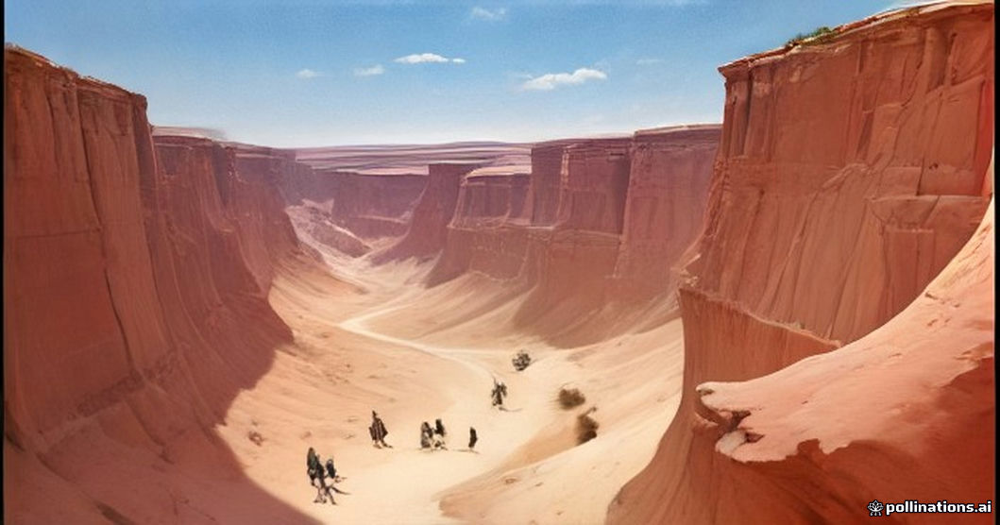

Todra Gorge sits naturally along the route between Dades Valley and the Erg Chebbi dunes. Most standard tour itineraries stop for fifteen minutes at the narrowest section of the canyon, where travelers step out of the van, snap a few photos of the 300-meter vertical limestone walls, and get straight back on the road. While impressive, this roadside stop misses the surrounding palm groves, ancient ksour, and quiet cliffside trails that showcase authentic oasis life.
Stopping for a one- to two-hour hike is one of the best ways to stretch your legs on a heavy driving day. However, every hour spent on the trail is an hour subtracted from your schedule in Merzouga. If you spend too long in the canyon, you risk arriving at the staging point after sunset or rushing through your evening camp departure. Here is how to handle local guide logistics, choose an appropriate trail length, and keep your desert timing intact.
The Main Trade-off: Trail Time vs. Desert Arrival
The drive from Dades or Tinghir to Merzouga takes roughly three to three and a half hours of pure driving time. If you leave Dades Valley around 8:30 AM, you reach Todra Gorge by 9:30 AM. A short photo walk puts you back in the vehicle by 10:00 AM, getting you to Merzouga around 1:30 PM—leaving plenty of time for lunch and a relaxed afternoon before evening camp transfers.
If you opt for a two-hour hike, your departure from Todra pushes to 12:00 PM or 12:30 PM. Add a lunch stop in Tinjdad, and you will not reach the dunes until 4:30 PM. During winter months, when the sun sets around 5:30 PM, this leaves no margin for delays. If you want a longer trek, consider booking a [/blog-3days-vs-5days](5-day itinerary) rather than compressing everything into three days.
Choosing a Trail: From Palaces to Ridge Loops
Depending on your physical condition and available time, there are three distinct walking routes around Todra Gorge and Tinghir.
- Palmeraie & Ksar Walk (1 hour, easy): A flat walk through agricultural plots, beneath date palms and along irrigation canals. Fully shaded and ideal for families traveling with [/blog-marrakesh-to-merzouga-with-kids-and-elderly](young children or elderly relatives).
- Nomad Trail Ridge Loop (2 to 2.5 hours, moderate): Ascends the canyon walls behind the gorge, crosses an open plateau used by seasonal nomads, and loops back down to the main road. Requires basic fitness and suitable [/blog-footwear-strategy-morocco-desert-tour](walking shoes).
- Full Canyon Circuit (4+ hours, strenuous): A deep loop into the upper canyon hinterlands. Scenic and rugged, but practically impossible to combine with reaching Erg Chebbi on the same day.
Hiring Official Local Guides on the Spot
You do not need to pre-book an expensive excursion in advance. Local guides cluster around the narrowest passage of the gorge and outside the primary hotels near the entrance. Always ask to see their official badge issued by the Moroccan Ministry of Tourism. Unlicensed 'faux guides' frequently target travelers near the parking zones, offering cheap walks that turn into high-pressure shopping trips at local rug cooperatives.
Expect to pay between 150 MAD and 250 MAD ($15–$25 USD) total for a private one- to two-hour walk for your group. Agree on the price, target duration, and exact route before you start walking. Explicitly tell your guide beforehand if you prefer to avoid commercial stops so they keep the route focused strictly on the scenery.
Trail Conditions and Necessary Gear
The terrain on the upper loop trails consists of steep limestone scree, loose gravel, and uneven rock steps. Running shoes with good grip or lightweight hiking shoes are sufficient, but open-toed sandals or fashion sneakers present a real slip hazard on the descent.
Temperatures inside the narrow gorge remain cool during the morning hours, but heat accumulates rapidly once you ascend onto the open plateau above the canyon wall. Pack at least 1.5 liters of water per person, apply sun protection, and keep small dirham notes on hand to tip your guide or buy drinks at trailhead stalls.
| Trail Option | Typical Duration | Physical Effort | Impact on Desert Schedule |
|---|---|---|---|
| Gorge Floor Photo Walk | 20–30 mins | Minimal (flat asphalt) | None; arrives in Merzouga around 2:00 PM |
| Palmeraie Oasis Loop | 1 hour | Easy (flat dirt paths) | Minor; allows a relaxed lunch stop in Tinjdad |
| Nomad Ridge Trail | 2–2.5 hours | Moderate (steep rocky climb) | Tight timing; requires early 8:00 AM departure |
| Upper Circuit Hike | 4–5 hours | Strenuous (scree, full sun) | Incompatible with same-day desert camp entry |

Illustration, not a photograph — for the real thing, you'll have to stand on the ridge yourself.
Quick answers
A few follow-up questions travelers ask about this.
Do I need a guide for the Todra Gorge palmeraie walk?
For simple walking along the paved road inside the gorge, no guide is necessary. However, navigating the network of private irrigation paths through the palm groves or finding the trailheads for the mountain loops is confusing without a local guide.
Where does our driver wait while we hike?
Your driver drops you at the trailhead or canyon entrance and parks at a designated vehicle area or café near your planned exit point. Heavy luggage stays secured inside the vehicle.
What happens if our hike takes longer than planned?
Inform your driver as soon as you descend. They will contact the desert camp team to adjust your evening camel schedule or arrange a 4x4 shuttle to camp if you arrive past sunset.
Planning your own route?
Tell us your dates and what matters to you — we'll answer with a straight recommendation, not a brochure.
Send an inquiry See the itineraries